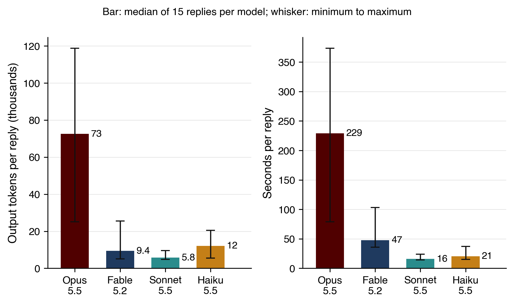

MATERIALS SCIENCE & ENGINEERING
TEXAS A&M UNIVERSITY
Department of Materials Science and Engineering
42

Median per reply
Opus 5.5: 73 k tokens, 229 s
Fable 5.2: 9.4 k tokens, 47 s
Sonnet 5.5: 5.8 k tokens, 16 s
Haiku 5.5: 12 k tokens, 21 s
0 forward passes, 0 labels